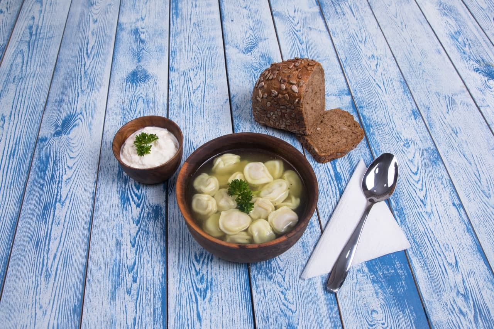
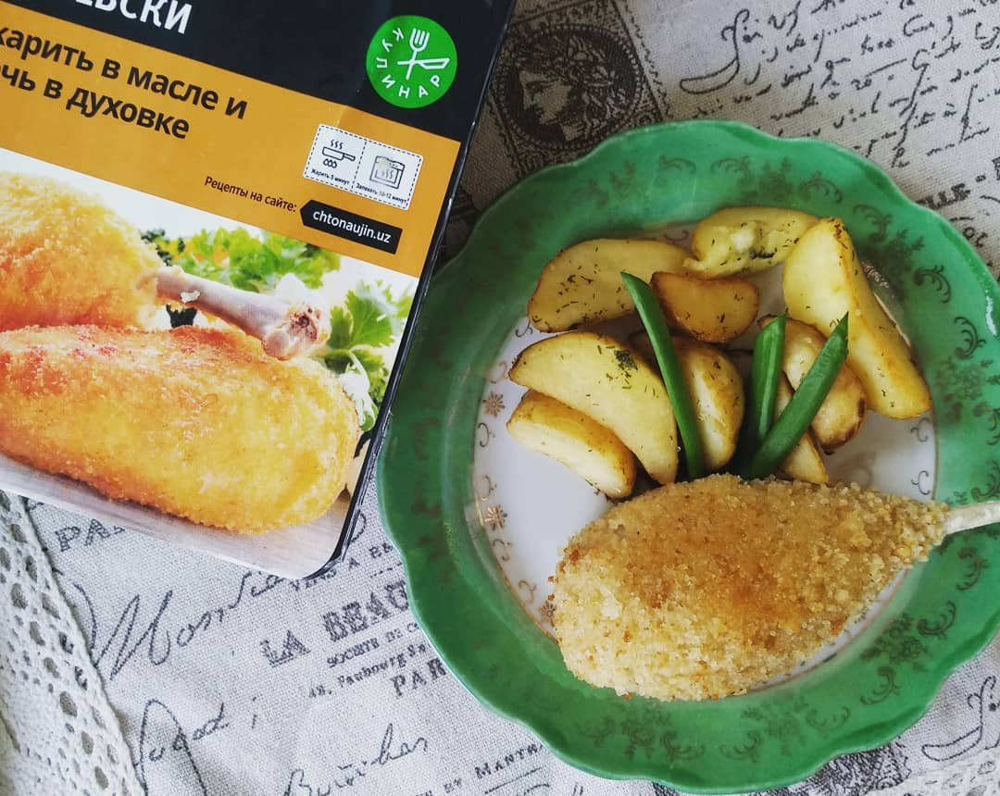

O'zbekistonda tayyorlash oson bo'lgan 2ta tezkor kechki ovqat retsepti
Reja:
"Domashnie" chuchvaralari;
Kievcha kotletlar va kartoshka fri
Domashnie chuchvaralari

Ushbu retsept chuchvara ixlostmandlari uchun.
Mazali bulon tayyorlash qiyin emas.Kerakli mahsulotlar:
2 o'ram "Kulinar"ning "Domashnie" chuchvaralari.
dafna yaprogi bargi,tuz,tabga ko'ra Murch
"Kievcha kotletlar va kartoshka fri;

1 o'ram "Kulinar" kievcha kotletlarni oling. Kotletlarni muzdan tushirmang.
Chuqurroq tova yoki qozonga kotletlar bemalol suzib yuradigan darajada yog' quying.yog'ni qizdiring.
Kotletlarni ehtiyotkorlik bilan yog'ga soling. Oltin tusga kirguncha qovuring.
Kotletlarni 180C darajagacha qizdirilgan pechga qo'ying.13 daqiqa davomida toblang.
Ungacha kotletlar qovurilgan o'sha qozonda uzunchoq to'g'ralgan kartoshkani oltin rangga kirguncha qovuring.